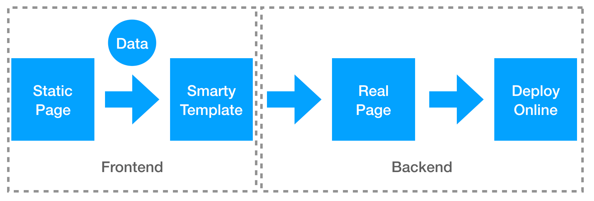

Abstract
What have I done in this project?
- Developed and maintained 60+ channel pages of JD.COM.
- Optimized the loading time of page to less than 1.5 seconds.
- Reduced 50% of the development time for each page.
- Updated the technology stack from jQuery (2015 - 2018) to React + ES6 (2018 - 2019).
Introduction
I have developed and maintained over 60 channel pages of JD.COM in 4 years. The channel pages show the products and activities for each category and guide users to purchase products. Their entries are mostly located on the first screen of the home page. A channel page usually contains several sections:
- the common header and footer of the page
- the first screen which has a category and a slide for different activities’ images
- some lists for hot sale products
- some coupons for the category
- some floors for subcategories which use different styles (tabs, slides, etc.) to show the information
- the list for recommended products
Even though the channel pages have a familiar structure, each page has its individual UI and feature, it was designed in different styles. There are 3 examples:
hk.jd.com | art.jd.com | fashion.jd.com
Development Process
Old time
When I began to develop the channel page as a rookie, there was already an old development process. As a frontend developer, I just need to write a static page with HTML and CSS (Sass) and some basic interaction with JavaScript (jQuery) based on the UIs and UXs, then I would give the page to the backend developers who put the real data on the page, and then they deployed the final page online. It seemed like the frontend developer only developed part of the page, but we had to keep communicating with the backend developers the whole development stage and answered their questions about the page. It was inefficient.
New CMS
So we started to change the development process. The backend developers build a new Content Management System (CMS) which used by the frontend developers and operators. When we finished the static page, we should split the whole page to several floors and add them into the system. If we want to access the data recorded by the operators, we also had to change the HTML to some smarty type sentences. Then the system builds the whole real page and deploy it. We can see that the backend developers are free, but frontend developers have much more things to do. Even though we can save the floor as template, it still increased our workload, and the total development time was not reduced (about 10 days).

Reduce the process time
Then I have to think about save our time. As a frontend developer, I am familiar with the JavaScript template, not the smarty. So we don’t need to write the smarty template, we can write a JS template and put the data in JSON, then we can render the whole floor. In this way, we can write the template directly, it really reduce the development time (3 - 5 days).
Some example code:
template
1 | <script> |
render
1 | const floor = $('.channel-floor'); |
Optimization
There are several points to optimize.
Optimize structure
Since we print all the data to the HTML, the structure looks a little unclear and the page code is too long. So we use a new system to get the data by APIs and we put the template code into the JS file of each floor. Then the whole page is small and clear, it is better for SEO.
The floor structure is like that:
1 | // Floor HTML |
1 | // Floor template.js |
1 | // Floor interaction.js |
Lazyload
After we divide the floor code, we build a main.js to load each floor asynchronously. When the screen scroll to the floor, we use the data-attribute of the floor to get the path of the template and data and then render it.
1 | // main.js |
In this way, we can reduce 10+ js requests and 100+ image requests when the user open the page.
Optimize image
There are hundreds of images on the channel page, so if we can reduce the size of image, the page will load faster. Except image lazyload, we use the webp image if the browser supports it. Then each image can be reduced by 25% - 75%.
1 | // check webp support |
What’s more, we deliver the image requests to different image server equally, so that we can get more images at one time.
After that, the loading time of page is under 1.5 seconds.